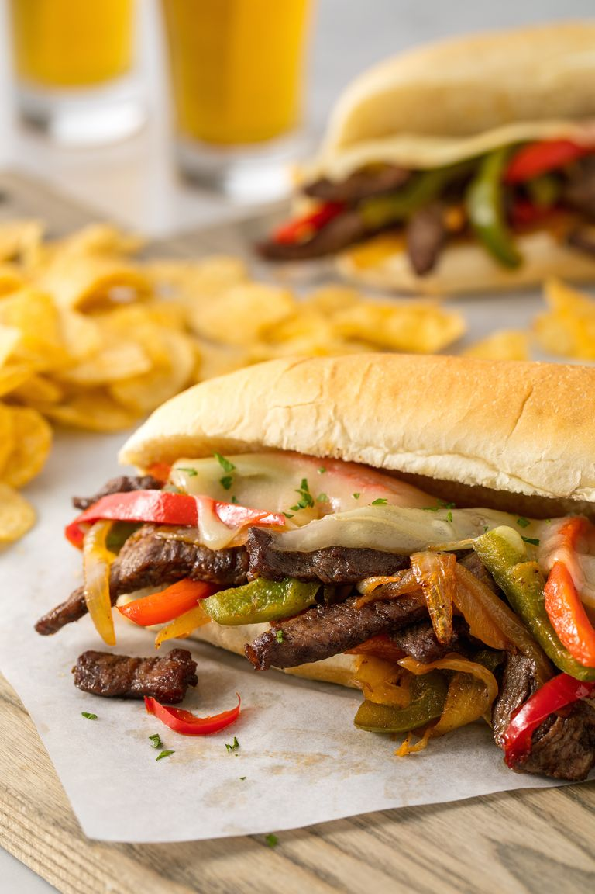

Homemade Philly Cheese-steaks

Description:
Philly cheese-steaks are iconic—and for good reason. This is my version of the sandwich, which satisfies my cravings every time.
Ingredients:
- 2 tbsp. extra-virgin olive oil
- 4 peppers (a variety of colours), thinly sliced
- 1 large red onion, sliced
- 700 g sirloin steak, thinly sliced
- cheddar cheese
- 4 baguettes
- Salt
- Pepper
- Mustard
Steps:
- In a large pan over medium heat, heat 1 tablespoon oil. Add peppers and onion and season with salt. Cook, stirring often, until caramelised, 12 to 15 minutes.
- Remove onions and peppers from pan and set aside. Add remaining tablespoon oil and cook steak until it has almost reached your preferred doneness, about 5 minutes.
- Season with salt, pepper and a healthy dose of mustard.
- Return vegetables to pan and toss to combine with steak.
- Lightly toast the baguettes in your oven
- Grate cheese over mixture and cook, covered until the cheese is melted, about 3 minutes more.
- Divide mixture among baguettes and serve.